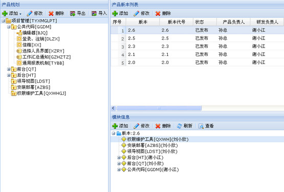
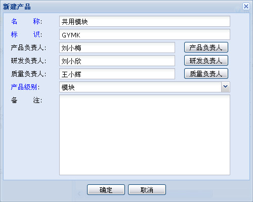
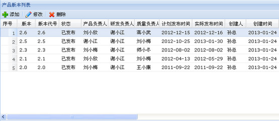
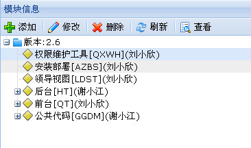

产品规划模块以产品树的形式展示系统体系结构，通过产品规划管理，可以将项目过程中发现的缺陷定位到具体的产品规划模块，也可以给需求条目设置产品，还可以将测试用例与产品关联起来。
产品规划主界面如下图所示。

图 产品规划主界面
4.2.2.1 产品基本管理
通过产品规划管理界面工具栏的“添加”、“修改”、“删除”按钮可以添加、修改或者删除根产品或者子产品，添加产品时可以选择产品级别，产品级别划分为“系统”、“分系统”、“子系统”、“框架”、“构件”、“模块”几种级别。
新建产品主界面如下图所示。

图 新建产品主界面
鼠标点击产品树的某一级节点，可以在右侧显示页查看该产品的版本和模块信息。
4.2.2.2 产品版本管理
通过管理界面工具栏的“添加”、“修改”、“删除”按钮可以添加、修改或者删除产品版本，产品发布新版本时，会继承上一版本的内容。
产品版本列表如下图所示。

图 产品版本列表
4.2.2.3 产品模块管理
通过管理界面工具栏的“添加”、“修改”、“删除”按钮可以添加、修改或者删除产品模块，“查看”按钮可以查看模块的详细信息。产品发布新版本时，产品模块也会继承上一版本的模块。
产品模块信息如下图所示。

图 产品模块信息
4.2.2.4 导入和导出
可以将产品规划ZIP包的形式导出，然后导入到其它系统的项目中，也可以导入到同一个系统的不同项目中。